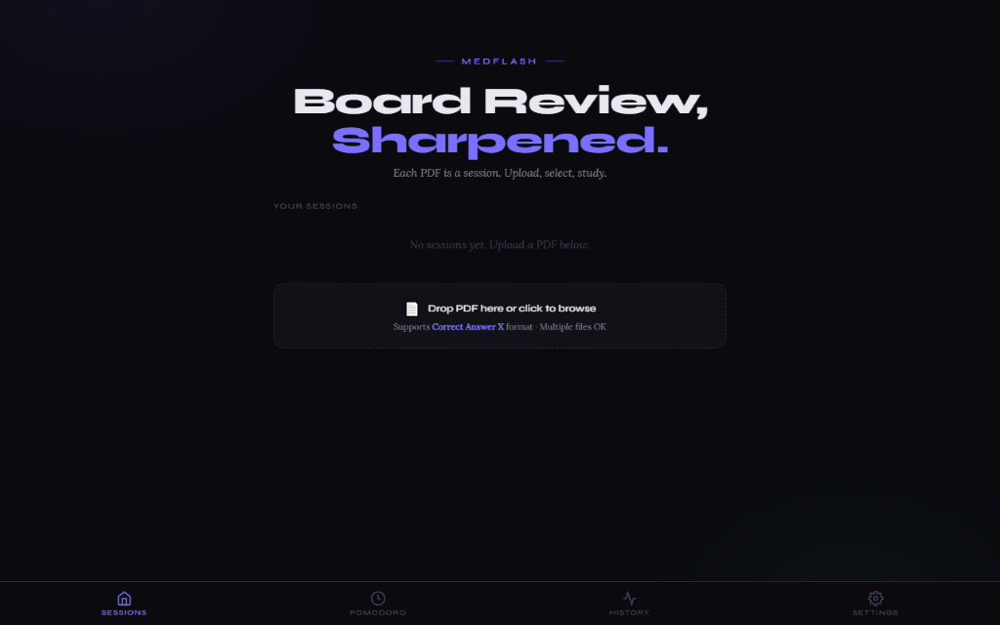

01
— GENERATIVE CINEMA / AI MODEL TRAINING
Azarun
A cinematic AI trailer introducing an African mythological hero—engineered with custom Runpod GPU LoRA training (azarun_god_v1) for cross-shot character consistency.
Every entry distinguishes deployed web products and playable demos from interface prototypes and codebase studies.
A cinematic AI trailer introducing an African mythological hero—engineered with custom Runpod GPU LoRA training (azarun_god_v1) for cross-shot character consistency.

Founded an on-chain .irys domain-minting, mutable-reference transfer, and Proof-of-Vibe onboarding dApp—documented in CV as reaching #1 dApp in the Irys ecosystem.

A cohort mentorship command center for running structured programs, reviewing daily check-ins, and delivering image-annotated feedback with Firebase RBAC.

A physician-built board review application that converts raw multiple-choice question PDFs into structured active-recall study sessions.

A ten-player browser battle royale and 5v5 arena shooter set in Computer Village, Lagos—built with an AI-assisted 3D asset pipeline and deployed on Cloudflare Workers.

A phone-first 3D multiplayer prop hunt set in Computer Village, Ikeja—traders disguise as market goods while the Task Force searches before time runs out.

A mobile-first 3D Lagos zombie survival game directed and launched end-to-end with an AI-assisted character and audio production workflow.
An AI career-direction web application combining conversational assessment, personalized pathways, skill-gap diagnostics, and serverless Anthropic & Airtable functions.

A multi-screen React clinical learning prototype uniting generated study timetables, note ingestion flows, OSCE practice, MCQ views, and an AI mentor interface.

A healthcare emergency-response prototype exploring blood-donor alerts, urgency prioritization, donor education, and rapid alert acceptance flows.

Community founder and partnerships lead behind 50+ paid crypto campaigns across NFTs, DeFi, and trading platforms—operating communities with 75K+ combined reach.

High-traffic community management, trust & safety moderation, advisory, and project management across major Web3 ecosystems.